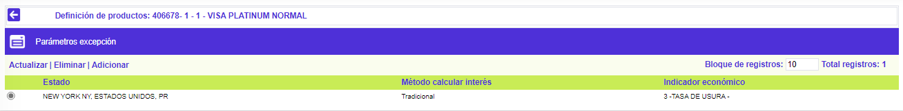
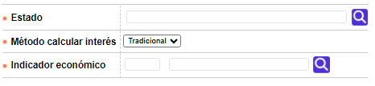
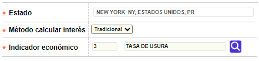

|
Definición de productos - Parámetros de excepción |
Esta opción que se invoca desde el formulario Definición de productos se habilita únicamente cuando en en el formulario parámetros operativos en el campo Excepción geográfica se encuentra seleccionada una opción diferente a No aplica y le permite a la entidad parametrizar aquellas ubicaciones geográficas para las cuales aplican condiciones especiales en los procesos de liquidación de intereses.

El formulario contiene las opciones Actualizar, Eliminar y Adicionar.
Adicionar: si el usuario invoca la opción Adicionar se despliega un nuevo formulario con los siguientes campos.

Descripción de campos
|
Estado |
Campo obligatorio con lista de valores de la cual se selecciona el estado o ubicación geográfica para la cual aplican las condiciones de excepción que se van a definir. |
|
Método calcular interés |
Este campo obligatorio tipo combo permite seleccionar entre SPDIC (Saldo Promedio Diario Incluye Compras) y SPDEC (Saldo Promedio Diario Excluye Compras) la forma como se debe liquidar el interés para el estado señalado en el campo anterior. |
|
Indicador económico |
Campo obligatorio con lista de valores de la cual se selecciona el Indicador económico a utilizar para liquidar el interés correspondiente. |
Actualizar: si el usuario selecciona un registro e invoca la opción Actualizar, se despliega un formulario en el cual los campos modificables son Método calcular interés e Indicador económico.
